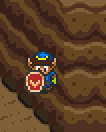
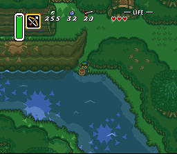
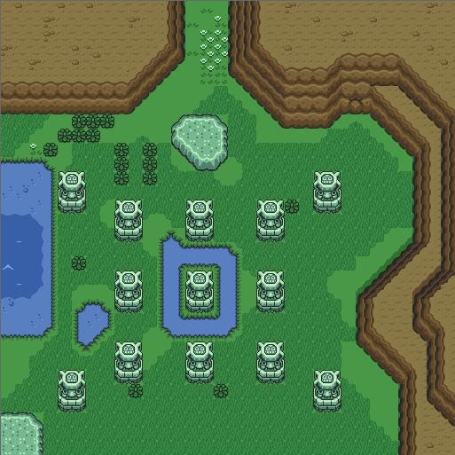

|
Zelda3C
Diary
September 4, 2012 People of Earth. We have decided to return GameMakr24 to
his planet of origin, having extracted all possible knowledge regarding the
world called Hyrule. We will now
commence our search across the cosmos for the Triforce. Thank you for your understanding. …Hi, everyone. [sheepish] As many of you know, tomorrow marks
one year since my previous diary update.
I myself might have missed the occasion, but many emails lately have
ensured my awareness. I’ve
actually been writing my next installment in my head, over and again, during
my long commutes to work. “How
do I tell the world I’m not getting anywhere?” The sad fact is that the
project is no closer to being completed.
It’s also no closer to being canceled, so long-time fans, please
breathe again. The Forces That Be
are still in effect, so since I can’t write about progress, I’ll
write about life. After my brother went
overseas to serve our great country of I thought I could manage
my time such that my wife and kids would get a large slice, and then I would
get a slice for myself.
It’s hard to put my finger on all the different ways my time is
claimed, but anyone reading this knows that “things come
up.” This weekend,
it’s someone’s birthday.
Next weekend, we have to clean part of the house. Etc, etc. I can steal away an hour
at times, whenever possible, but for me it’s hard to get into the
groove. When I sit down, I have
to relearn all the details of editing the game, and of course I need a clear
vision of what I’m trying to accomplish. By the time I achieve “ready
mode”, it’s time to quit, and the time for my next chance is
undetermined. There is such
frustration in waiting, forgetting, and starting again. This seems like a good
place to be honest, so I’ll admit that I was even cheating on this game
for a short while. Knowing I
haven’t created another hack since Zelda Outlands, I thought it
wouldn’t take very long to fulfill my life-long dream of turning Battle
of Olympus into a Zelda game. No
one has ever responded to this idea in the past, so I know it’s just
for me, but my ideas for it are incredible. The game is so close to being Zelda as
it is… all it would take is some graphics and text replacements. The serious catch, however, is the
text encoding. I spent many hours
trying to crack it, and essentially did, except for symbols and numerical
characters. Someday I’ll
return to that project too, but not any time soon. In this way, I’ve
at least kept my hex editing skills sharp and enjoyed a change of pace. NES games are so much easier for
locating data, lol… Another
problem with working on Zelda3C has been the ASM coding, specifically
overworld events. There came a
point (see lower on this page!) where I was dedicating all my focus on trying
to get the new world to change according to story flags. I experimented several ways with
opening Also earlier this year, I
experienced OPERATING SYSTEM NOT FOUND.
It seems my machine was tired of running Life is getting even more
demanding lately for reasons I can’t write about publicly, so I know I
can’t promise an immediate resurgence of progress. I can only assure that this project
“eats at me” all the time – I know I’ve come so far,
I know how awesome it will be, I know many people are waiting. I’ve gotten lots of encouraging
email from many people… no one ever complains about the wait,
it’s always “however long it takes!” each time. I must have some devoted followers if
even after a year, they haven’t given up. Speaking of emails, you know I have
another fun attachment to share.
This one isn’t actually from Eggz, but from a guy named
Ryan. He has used his own
“Zelda 3 engine” to produce this. See the message..? I’m pretty sure
that’s a question mark at the end of it, lol… Although I haven’t tried it, you
can actually play this at the following location: http://sixtypixels.net/dump/zcanvas/ Someone let me know if there’s a different
message when you step on the warp tile… Lastly, the Zelda3C
Message Board is no more. The
entire hosting site has been discontinued. Several people have written offering
alternatives, including the creation of a “real” blog that allows
comments. I’ll have to look
into such a thing, as I’m sure it’s not hard to set up. I’ve also had suggestions for a
Facebook page devoted to the project, but that seems overwhelming to someone
who can’t keep up with a simple HTML file these days. And oh man, Twitter? If I had all the time in the world, I
would totally be tweeting about each fraction of overworld area I produce. :) I’m sure I’ve
written this before, but I really wish the overworld were already
completed. I didn’t set out
on this adventure with the notion of nitpicking every tile combination at a
snail’s pace, trying to use code to find just the right puzzle piece,
and using more code to create that piece when it’s proven not to
exist. I’m so glad the
dungeons are object-based instead of tile-based. I have this project because I enjoy
creating new worlds and quests within them; if I could just make the process
even more convenient, the game would finally be back in motion. Words for me to ponder…
September 5, 2011 What! I haven’t updated in five
months? I knew it had been a
while, but wow! Where does the
time go? :( I do know where a lot of
time has gone. As always,
I’m not writing to supply excuses, but to record lags in progress for
my own benefit as well as for readers.
A few months ago, my
brother learned that he will be deployed overseas for over a year. After completing his service, he plans
to start a new life in a different country where he has close friends. What this means to me is that my remaining
days with him have been numbered.
Therefore, I have been spending LOTS of time with him, even more,
lately, than I have with my wife & kids. (My wife is very understanding, but my
kids – not so much, lol.)
He and I have gotten closer in this time; I’m really going to
miss him. Tomorrow morning he
leaves for 3 weeks of training; he’ll be deployed immediately
afterward. He’s very
private and paranoid so I won’t say where, but it’s fortunately
not into any war. Even before his
unit was chosen for active duty, we’ve been hanging out a lot; my days
have usually been defined by everyone competing for my attention, with no
“me time” spared. I
am very loved; no complaints here!
In the future, though, my newfound hours will be spent working on
Zelda3C. I can finally –
FINALLY – make regular progress toward my goals for a whole new Zelda
game. I was actually going to
wait one more week before posting anything because I like to have real news
when I write, but Eggz has outdone himself this time – see below! I don’t know which
affects me more – reading about my own death, or seeing the name
‘Calatia’ in “actual print”... It seems only fitting that the
‘Link to the Past’ story is hacked in order to prod me toward
hacking the actual game! I love
that Link’s uncle mumbles hex values – priceless! So where do I go from
here? My primary focus, as
described in my last update, is to systematically experiment with event
overlays, such as the tiles that seal and unseal dungeon entrances, and
document my findings. I admit
I’m not overcome with excitement on this front. I long to create new areas, puzzles,
and gameplay scenarios, not meticulously poke at cryptic hex banks. But the torture will be well worth it
if I can tell Calatia’s story in a cohesive way. This means closing and opening
entrances to indoor areas on cue, especially in respect to time travel cause
and effect. As a closing note, my
genius friend Vagla (does he still use that handle?) has located several new
pieces of LoZ data which can be used to improve Outlands. Although I didn’t receive much
feedback for a “10 year anniversary” edition, and although the
“deadline” for this commemoration has passed, it won’t take
me long to apply the changes and release a new patch. I know there are people out there who
will enjoy the update. :)
March 25, 2011
Past: Zelda
Challenge on Cartridge! Many of you have heard
from ErockBrox on the message boards, a team member who is devoted to
experimenting with indoor puzzles and pushing the limits of dungeon
objects. This guy’s
generosity extends beyond giving his time and focus to Zelda 3 –
he’s actually given me a copy of my own rewrite, Zelda Challenge ~
Outlands, in cartridge form! I’ve known for
years that companies exist online that burn hacks to cartridge and sell
them. The first time I saw
Outlands for sale on eBay (for around $200, I think), I was initially upset. I never intended for myself (or anyone
else) to make a profit on this game – it’s all for fun. (Extreme fun!) But there was nothing I could do, of
course, other than to inform people that Outlands is not some long-lost, unreleased Zelda sequel. Flash forward to this
year – I actually receive in the mail an NES-gray cartridge containing
my own adventure, complete with a professionally created label based on
Zelda’s design, but gold-colored with “Outlands” written in
Zelda font. Just holding it and
knowing that I “created” its contents is uncanny. (Best gift from a fan EVER
– thanks again, Erock!!!) So of course all other
gaming is put on hold while I play my own game. I have to say, it was a unique,
satisfying experience to watch the title screen appear on my TV via my NES,
to read the intro story and see all the new items’ graphics, and then
to push Start on a real NES controller.
I created my file and set foot into a world I had designed a very long
time ago. And this time, save
states were non-existent... Almost ten years have
passed since I completed and released this hack to the world. (No, I didn’t get started on
Zelda3C immediately afterward...)
Even though I’ve fielded countless questions in email as to
various secrets’ whereabouts, I was not prepared for the vast quantity
of content I had forgotten about.
I wanted quick rupees? Too
bad – I couldn’t remember where all the secrets were! The next dungeon key? The specific walls that can be bombed
open, both outdoors and in? I
often had to search just like any other player. This, of course, is
actually the beauty of man’s imperfect memory. After all this time, I could actually
be surprised by the situations and circumstances laid out by my own hand. I still knew where to go and what to
do in the overworld, but I hadn’t analyzed the dungeons’ mazes
and puzzles since I had first created them. I even laughed at some of the traps as
shutter doors crashed behind me, thinking “Oh no, I didn’t...” As I got further into the
first quest, I was actually getting my butt kicked. I was avoiding getting Bagu’s
note because most players wouldn’t have found it yet, which means they
wouldn’t be able to buy medicine so soon. I’d be deep within Level 6,
overwhelmed by the number of centaurs (wizzrobes) in one room, and upon my
death my wife would say, “You have only yourself to blame!” I even had to draw maps
of the larger, more complex dungeons.
There was no way I was going to pull out my original blueprints from
the filing cabinets, which would’ve spoiled every last detail. I have yet to go back and compare my
design maps to my new ones, but I’d like to see how many of my own
secrets I missed. I don’t mean to
write a full review of my game here, lol, but I have to say that Second Quest
is a LOT harder than First Quest.
I’d say I had four times as many deaths. Rooms get more dangerous and bosses
are placed more frequently. I can
also say that it’s totally worth it to play, since I saved many of the
game’s surprises for last. The last surprise,
however, was unintentional – I found a new bug in the game!! :( It turns out that the Thunderbird
(Ganon) can actually escape the room and attack from the safety of the
informational area at the top.
Unfair shots were coming at me from my heart containers, from my
rupees, from my map... And this
final boss WOULD NOT come back into the actual room. I had to save, quit, and walk all the
way back for a new confrontation before I could beat the game. The reason he escaped in the first
place? The introduction of those
pillars along the walls provided bridges that occasionally let certain kinds
of monsters out. I didn’t
know about this while creating them, but I’m pretty sure there
aren’t any other rooms where you’re trapped with no way to reset
monster positions. Oh well
– the Thunderbird is occasionally cheap and flies to where you
can’t strike... no use
regretting it now. It has occurred to me
that the 10 year anniversary of Outlands is coming up; I could commemorate it
with a new version addressing this as well as a host of minor
improvements. Such a release
would include: -
Cleaning the top and bottom rows tiles on the title screen, which
weren’t revealed to me in NESticle. -
Increasing the text speed, using a change provided by someone too late. -
Better ocarina (flute) destinations, since I *finally* know how to do
that. Currently, Link flies to
the original game’s dungeon sites. -
Create a text warning within a few dungeon rooms about monsters that
can escape OR fixing / removing the pillars from the walls. -
Moving a few items (won’t say which, for spoilers) to where they
would be more useful if found sooner. -
Correcting very minor outdoor terrain alignments with adjacent screens. -
Fixing the slight graphics glitch behind the giant Stalfos, which also
didn’t occur in NESticle. I’m not committed
to this yet; just playing with the ideas. I would have to relearn parts of the
game’s inner-workings and re-familiarize myself with a lot of hex. Plus, I think the 10-year mark is next month; I’d have to get crackin’! The only way I’d even consider
this is if I were flooded with requests for an updated release. Most of these are blemishes on an
otherwise perfect rewrite.
Anyone truly interested in an updated release? Present:
Descending River Okay, getting back to
SNES. I’ve finished a
series of short waterfalls, the likes of which never existed in Zelda 3. By short, I mean half the normal
height. Can someone tell me if
this section of river looks good? I don’t think it
looks bad... But I have
reservations regarding animation, which I’ll get to in a moment. The sides of each waterfall
don’t quite connect to the water below, but I think that’s
forgivable. And of course, I need
to place more animated waves here and there. I think it’s
awesome that it takes two waterfalls to reach from a one-story cliff to a two
story cliff. That is, the game
doesn’t normally have such short drops as presented by these
mini-falls. The cliff east of the
bush here is, technically, a 1.5 story high cliff. I had to block it with ridge because
Link’s physics make weird jumps if he leaps from up there. I was inspired by many
photos of rivers that have small drops too brief and numerous to be called
waterfalls. Making a whole series
of these like you would find in real life, however, would be quite an
undertaking since dry land would have to descend with short cliffs and/or
increasingly tower over the river.
Due to pre-decided water levels in Calatia, however, this is more than
an experiment – I need the water
to drop here to match the landscape to the south. The minor problem, as I
said, is with animation. Check
out all three frames of this same location: If you look closely,
there are sharp, square corners on all sides of the two center walls –
only the middle screenshot is spared.
As far as I can tell, there’s no way to smooth away these black
squares. I believe I’m
still going to keep these waterfalls, even though I can’t improve
them. There are only so many
tiles available; I built these walls using the least awkward tile
combinations. As for functionality,
almost every rock (iceberg?) is strategically placed to limit Link’s
movements. If he hits a wall
while falling, he’ll just keep falling until he finds somewhere he can
stop. Those eastern rocks
actually keep him from falling up onto the southeast shore! Also, since I know you’re
wondering, Link can’t swim between the two walls dividing the pairs of
waterfalls. He just won’t
fit. It can’t be helped! This is the last
overworld area I’m going to construct for a while. I’m mostly creating areas in the
order they will be encountered; I have finally reached a point where I must
know my limitations with events and overlays prior to continuing
development. Some decision-making
is in order to make sure Link’s itinerary and the story itself are
sound. Future: Story
Events Although I dare not say
why, certain areas I’ve been working on are critical because they need
to change with the course of the story.
Using Zelda 3 as an example, the front gate of I’ve long known
that these events are hardcoded into the game’s ASM. They’re apparently complicated
or at least very hard to find and decipher. For the most part, I’ve planned
Quest for Calatia without assuming I could ever control these devices,
choosing instead to make creative secret entrances with the abilities I do
have. In light of the
“opening story situation” I’m currently facing, I really
need to move the castle gate event. I have changed the overlay in Hyrule
Magic; it’s no longer a castle gate; I just need to make my new set of
blocks appear somewhere else. I have a lot of studying
ahead of me to determine how much control I have over where, when and why
events happen. A long time ago,
Sephiroth3 gave me the addresses in the ROM for some tables that control
where overlays occur. I’m
only just now experimenting with the findings he provided me. My first test was to swap a permanent
event with a temporary one. Can
you recognize both areas depicted by this one screen shot? Normally, when you dash
into the rocks stacked west of Link’s house, an event places an overlay
so that, going forward, there is a stairway leading underground to a fairy
cave. (Grab your bug-catching
net!) I swapped this event with
the drained pond event; now that Link has been in that cave, the rocks are
still there but the forest is overwritten by dirt and mud. (The soldier here is unfazed by the
deforestation, but refuses to get his metal boots wet...) Meanwhile, as shown
below, pulling the indoor lever to open its floodgate has no effect on the
marsh pond, but it does cause a familiar hole to appear north of it. The piece of heart, however, still
appears in the same place. Looks like the blue
soldier isn’t afraid of shallow water; I guess the green one near
Link’s house just refuses to cross the mud. None of the soldiers made any real
attempt to harm Link during the taking of these screenshots; Agahnim’s
control over them has definitely dulled their senses... My new focus is to study
every aspect of all the game’s events and learn how flexible each one
is. I can then properly
incorporate them, when possible, into the new adventure. I have a definite need for the castle
gate event, but most of the others won’t make or break my current
plans. Wish me luck! :)
January 11, 2011 Happy 1-11-11! I rarely make New Year’s
resolutions, but I’ve thought of a good one. Post more, even if it’s nothing
incredible, and include more images so you don’t have to imagine
everything. People have been telling
me that for years, but it just got more convenient for me. Rather than take a screenshot, rename
it, and it write it into the HTML, I can just copy/paste anything I want into
Word and not worry about what its file name is. I’ve always said I love Excel
and hate Word, but for once, it’s really helpful! So anyway, here’s a
glimpse of this year’s efforts. Hills generally
don’t bend at right angles unless they’re carved by man. In fact, it never occurs in Zelda 3
except throughout the Yeah, that mountain was
copied straight out of This particular mountain
bend is critical. It’s at
the top of a large screen (Truce Dam and its surroundings) where it
transitions to a small screen ( Just as scary as the scrolling
error is the sheer height of this mountain. Higher than I’d expected,
considering what I did along the side of I agree, that looks
ugly. I knew this would also need
to be carved up somehow – it’s as if Link could walk on this
wall, and we’re not playing Prince of Persia. Worse, try imagining this image placed
directly north of the first image I pasted. That’s the transition you would
see when walking from one screen to the other! I just thought I’d
randomly demonstrate the planning and constructing required for the
overworld. =) This was an easy one, but I still had
to play with the various sides of hills to create something cohesive. Here’s the solution I came up
with: The mountain is still
much taller than I’d planned; it takes up more of the lake than
desired, but at least it looks good.
The only way to make it big enough to prevent the scrolling error was
to give it an actual summit, which I had been avoiding to give the impression
of “so high you can’t see the top”. Next, I worked on the
grassy, shallow path that separates this new mountain from the river. The cool thing is that it’s just
wide enough for Link to walk on.
Hug the mountain, don’t fall in the water (unless you can swim)
and see where it takes you! From here I found myself
back in the Future again. As is
often the case, requirements of this more complex world often dictate how the
Past should be designed. I like
to design chronologically; I would normally put off advanced areas until
basic areas are complete. I
can’t reveal the nature of the Lake of the Future, but it greatly influences
the I’ve carved a lot
of hills and cliffs the past few days.
We’ve been stranded at home in the snow, so I’ve designed
some sections that have only existed in my head until now. It’s such a relief to see that
the layout works the way I’d envisioned. I would show you, but you really
don’t want to see that far into the game. ;) Plenty more free time ahead. Link is always jumping off cliffs only
to get trapped in nearby hills; I have some mountains to move! 
November 21, 2010 This weekend has been unusually
productive; I have several things to write about today. And yes, I’m trying to make up
for being so quiet this year. Before I begin, I’d
like to brag about Harmony Forest some more. I know there have only been a few
screenshots, so you truly can’t imagine how epic it is. (Reposted below.) But any time I find myself opening
this area, either to copy a river-side block or just to browse past it, I am
struck by what an artistic portrait it is. You can never see the whole thing at
once in-game, of course, but in the editor, I’m stunned that I could
create something so complicated and beautiful. In my own (biased) opinion, it’s
better-looking than the Lost Woods, with two kinds of trees, a creek running
through it, and horizontal as well as vertical hollow logs. It’s a great inspiration as I
take on the latest areas – it makes me believe I can create any kind of
environment I want!
 So, thick & grassy
fields. I’ve always loved
taking my sword out on a brisk Hyrule day and mowing the lawns with my dash
boots. Therefore, I’m
making sure to include thick grass in the more out-of-the-way places in
Calatia. But, did you ever notice
the limitations of grass placement in Hyrule? Behold a screenshot from Zelda 3. (Look, I posted a screenshot! Lol!)  Okay, the awesome
creators of Zelda 3 laid out vast grassiness in the marsh south of
Link’s house. They did a
great job too – it appears to be natural and plentiful. But you’ll notice the grass
shies away from the large rock near the entrance. More importantly, it’s never
diagonally adjacent to mountains!
The thick grass touches the mountains only in horizontal and vertical
places. This is because to place
grass against mountain diagonally, 16x16 blocks would have to contain both at
once. It would take four new
blocks to accomplish this effect. Because my new path
between river and mountain is so narrow, I decided my shoreline
wouldn’t look good with thick grass unless I pushed the grassy
limits. Thus, here is an image
containing “Session 3” of As always, ignore green
shallow water and the strange grey tiles. The blocks here are arranged to fit on
my 4x7 canvas. With these new
blocks, I can give fuller body to thick grass among mountains. Other tiles here allow for thick grass
close to shallow water, which Nintendo did as well, except my versions
aren’t restricted to specific areas. Redundant disclaimer: No one will ever get a copy of this
editor; please don’t ask.
=) The area I’m working
on is a mighty waterfall pouring water into Calatia from the north edge of
the game. However, I’ve
been forced to create it one area south
because Hyrule Magic displays Area 04 without water. You see, there is no water on Lucky for me, because I
split “Large Area 03 ~ I do have some bad news,
though. The ASM patch, which I
only apply to copies of the game
because it’s irreversible, is causing strange backgrounds to appear
within the tree roots near Truce Dam.
It only kicks in when I exit It looks really pretty as
it flows along by itself, using various dam graphics. However, I really think I should get
it fixed... I’ll need to
beg either Reshaper256 or Sephiroth3 to read the ASM hack and trace whatever
is triggering this otherworldly layer. In closing, now that I
know I can freely use my new river area where it’s intended in Area 04
instead of Area 0C, I can begin the real
Area 0C which connects the massive waterfall to the lake behind the dam.
November 7, 2010 One more post before the new year! (Or more? Never know...) I’ve only posted twice this
year, besides right now; must be some kind of record. It seems the more I try to stay on top
of this project, the farther away I drift. But if you’re reading this, you
must not have given up yet. (Or
you have, but you’re morbidly curious.) No excuses... Long-time readers know the drill: life takes priority. I have an FTP client on here now, lol, though
it’s only a trial version.
CuteFTP, my old standby. I
wanted to also get CuteHTML, but they discontinued that product three years
ago. Now I’m writing this
in Microsoft Word, just to see how it turns out. Not used to WYSIWYG by any stretch,
but I should definitely get with the times. (I like typing HTML.) I briefly thought about starting a Facebook or Twitter
account for this. Wouldn’t
it be cool if I had photo galleries with comments and fans “befriending
the cause”? I haven’t
done this because I don’t want my already-flooded Inbox inundated with
friend requests, though I could probably control the settings on this. On Twitter, I could tweet whatever
small change(s) I’ve made to the game as they happen, and there could
be hoards of followers. Lol,
it’s tempting. I have an
Android phone now; I could really get connected. I have
been working on the game, off & on, even though I’ve been cut off
from online civilization. My
motivation would be so much higher if I weren’t always struggling with
details instead of designing new areas in leaps and bounds. It’s a fun project either way,
but inspiration comes from the big picture, the quest, not the infinite bytes that make up Link’s world. On the programming front, I found many cases where
my new “dump” of data into Excel wasn’t expected by my
obsolete programming, which still assumed I was storing data outside the ROM
only as it became relevant. For
example, let’s take 32x32 block 863. That’s a stack of five rocks
that Link can dash into and break as he crashes into it. I colored them brown instead of white
/ turquoise, but that’s not important. =) My program was designed to keep
reading rows, scrolling down, until it found a block called 863 whenever it
needed to access it. Now that
I’ve dumped everything into a database, that information is actually
found in record number 863. No
need to see if I’ve recorded that block for later usage –
it’s guaranteed to be found now.
It’s been months since I cleaned up my code, so I can’t
detail the critical issues, but things had to be addressed before I could
save the latest session without overwriting important data. I’ve been working north of Truce Dam, on a
river leading into the lake behind the dam. Unlike the other areas I’ve
created, it has no direct ties to the story and no location-specific
graphics. It’s just a place
in the wild that Link can explore.
But brace yourself for a spoiler:
the water level is different depending on the current time
period. The dam allows more water
to pass in the future; volumes drop from “shallow water against
grass” to “cliffs descending to water.” In Zelda 3, water levels only varied
inside the Dark World’s Level 2 and at the small pond surrounding its
entrance, but nowhere else in the game.
Zelda3C’s outdoors varies its water levels by time period in
several places; what may be a deep body of water now may become shallow or
dried up later, and vice-versa. One problem I had to address is depicted by a
screenshot I had made for myself as a reminder. (Trimmed to hide spoilers.) The blue tile is a Time Tile (or hourglass tile)
that will send you back to the past.
It is temporary for testing; don’t commit it to memory! The grass color will ultimately be
dark green, and the bushes won’t be purple. (This is not a new Dark World.) The time period NOT shown has water levels that
meet the grass edges with shallow water borders. The problem lies here in the
future. If Link starts at the
beginning of the thin red arrow and walks south, he is so close to the cliff’s
edge that he’s on top of the “jump west” tiles, so he
can’t fall off without first moving away from the cliffs. Worse, if he keeps heading south, the
southwest concave (by the top bush) will force him to jump diagonal-NW,
backward into the low wall he just passed. Once there, Link is stuck in the cliff
itself, swimming in the wall with no escape. (Not that it matters, but no mirror
allowed while swimming, remember?) Nintendo never allowed this to happen in Zelda 3,
of course. When this kind of
terrain wasn’t higher than Link could reach, the cliffs either had fences
or ridges, the latter of which are those natural-looking brown
“rails.” I reviewed
all of Hyrule Magic and found special consideration everywhere that Link
would have been able to bypass jump tiles. Resolving this required sliding the land masses to
allow enough space to place fences while still allowing Link passage. I would’ve used ridges but it
wouldn’t make sense for them to rise into place over the years –
it would be the opposite of erosion.
Such ridges can’t also exist in the past, in this case, because
the grass meets shallow water leading into wider deep water. It’s interesting to note that this is the
first “future” area I have created. (LW/DW are Past/Future in this
game.) Everything I’ve done
before now has been part of the past, a time period where Calatia is at peace
and Ganon is still presumed dead.
I have always put off working on “future” areas until much
later, as I like to create things in the order Link will experience them, but
the two versions rely on each other too much to create just the high-water
version. Now that I’ve been
to the future, I’m tempted to go back and create the future versions of
the town, castle, tower, etc, but they can wait until I’ve expanded the
world of the past. In closing, I’d like to thank everyone who
continues to follow this project, either by lurking (which is cool), by
posting to the board I’m about to catch up on, or by sending emails of
encouragement. I tend to not
write until I feel I have something worth reading, not realizing that most
everything I do is a measure of progress. I tend to not read the boards until I
have time to respond properly, and then it takes too long to find “a
time of no interruptions.”
The only way I can progress is through small, broken bursts instead of
scheduled hours, even though it pains me to jump in and then jump right back
out. I still very much love this
project and I look forward to a time when I can be obsessed and hammer this
world into being.
June 13, 2010 It's a good afternoon and things are getting back
on track. If you've been following the latest thread, you
already know I've regained focus the past few weeks. I'm only just updating
the diary because getting the old computer running is a time-consuming inconvenience.
(I really need to get an FTP client on my
How many differences can you find, above? Each one
represents an exact 32x32 block that doesn't exist in Zelda 3. This is a good
visual of my routine when creating new areas. First I build the general area
while ignoring small areas that can't yet be finished. Then I go back over
the land, filling in the missing pieces by making them in my Excel program. I
know that most of these imperfections seem like they must have
adjustments in the game already, but remember that these blocks are
combinations of four 16x16 blocks -- there's no way every combination could
exist. Below, the exact blocks needed are displayed in my Excel editor, along
with a few that already existed but are placed for reference during
development. Please don't ask for a copy of my Excel editor --
it's not for distribution. (It's not friendly to the average user, I won't
support it for others' requests, it's *my* toy, etc.) This may be the first
time I've actually shown a screenshot of the tile-level editor... I can go
into detail on what various buttons do if anyone's curious. And yes, the
flowers (and a few other graphics) do not have normal palettes -- displaying
palettes beyond defaults is one of the limitations; flowers happen to be
stored in the same set as water tiles. So, I create the new 32x32 blocks at the 8x8 (tile)
level, import them into Hyrule Magic, and then place them in the game. This
is what I've been doing for years, whenever I'm making progress. The reason
it's gotten easier is because I've written mouse-control code which automated
my mouse across HM, quickly clicking and copying ALL 32x32 block numbers into
the workbook to serve as an initial cache of blocks. This saves me lots of
time in having to look blocks up to make sure they don't actually exist
already, as well as letting me pull them onto the canvas so that I don't
start from scratch when building. (I actually did this for the 16x16 blocks a
while back; this new addition was a long time coming.) The only way I can imagine a better process would
be to increase the canvas size from just 4x7 blocks to a 256 block matrix --
big enough to build an entire area (or 1/4 of a large area) before importing
the whole thing into HM. It's tempting, but generally I like to make
additions of this smaller size anyway and then test them in-game before
moving on to the next canvas. Looking at my saved canvas sheets, in the past,
I filled 5 canvases for the dam, 10 for the village houses, 31 for the
forest, 5 for In closing, I'm currently focused on the cliffs
west of Truce Dam. They don't require new 16x16 blocks, nor any new graphics,
for the most part, so they should come together without much trouble. When
this area is finished, the next new area will be further west, where the
river diverted by the dam runs into parts unknown...
No progress. Well, no progress this year, yet. Last
year I wrote some mouse automation code to extract from Hyrule Magic all of
the 32x32 blocks, just as I had done for the 16x16 blocks a while back. This
lets me know much faster which large overworld blocks (size of 4 bushes, or 4
rocks, etc) already exist in the game. It's basically a new approach for
efficiency in creating the outdoors. At this point I was supposed to write
code to take advantage of this newly collected data, which won't be hard to
write. Late last year, the basement flooded when the hose
disconnected from our washing machine. We woke up the next morning with a few
inches of water standing at the bottom of the steps. Imagine my brother's
surprise when he jumped out of bed and his feet landed in water! Nothing
Zelda3C-related was harmed, but the nightmare was just beginning. We spent the next few weeks drying things out,
salvaging what we could, and throwing a lot of stuff away. As we cleaned, we
discovered a pre-existing mold problem on the walls and on the backs of
furniture. This required more scrubbing, trashing, etc. Also, lightning (yes,
lightning, AGAIN!) knocked out the exact wall socket where I run my computer,
and there are very few wall sockets downstairs. (This is still not replaced;
I'm upstairs now.) So my "inner sanctum" was soggy, smelly, and
powerless for a long time. The downstairs is mostly back to normal now, but
my "Zelda3C mindset" is still not where it should be. I have a happy reason, for a change, to not work on
the game: My wife has recently given birth to our first daughter! She's
almost 12 weeks old now, really cute, and of course very needy. :) Long-time
readers know that I always put family first; you can imagine I've stayed busy
helping with diapers, spit-up rags, etc... But mostly, I've been more
hands-on with my son, who is now 4 years old. He has reached the age where he
understands a lot and is easier to play with, lol... There have been other reasons not to squeeze in any
game design time, such as finally getting an XBox 360, not to mention all the
fun I have on my DS. My career is as busy as ever. Life events are always
coming up. Most people probably think this game will never be
finished at this rate, and at this rate, they'd be right. I rarely receive
fan mail anymore and I haven't heard from any of the team members. I love all
the developments of the past, and I'm sure as I get into it, I'll be reminded
why this game is so important to me. The work involved doesn't bother me, but
what I do hate is spending time remembering how everything works only to have
no chance to continue for another few weeks. As I write this, no one else is home and I know I
have several hours to myself. Even though I know circumstances still aren't
right to make leaps and bounds, I'm going to ease back into the project and
see if I get hooked. Otherwise I may find myself waiting even longer for
"things to calm down", which may not be a reasonable expectation.
No matter what, I'll keep stubbornly trying to complete this rewrite of my
favorite SNES game...
|